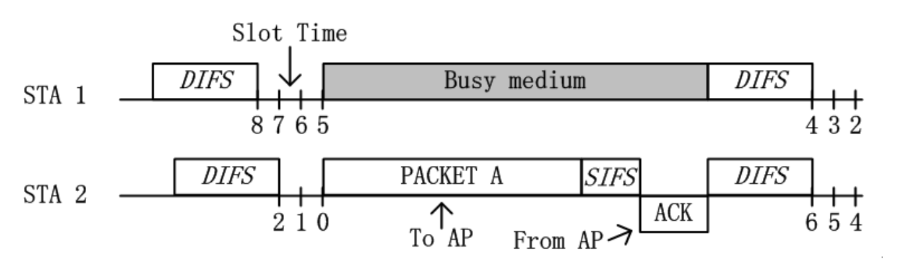
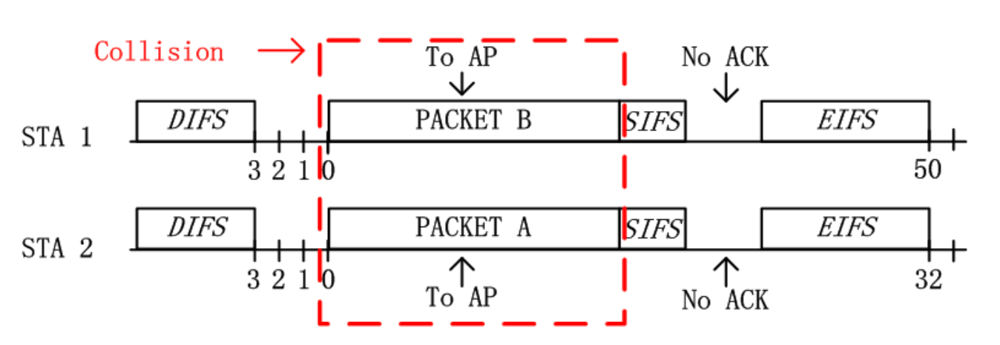
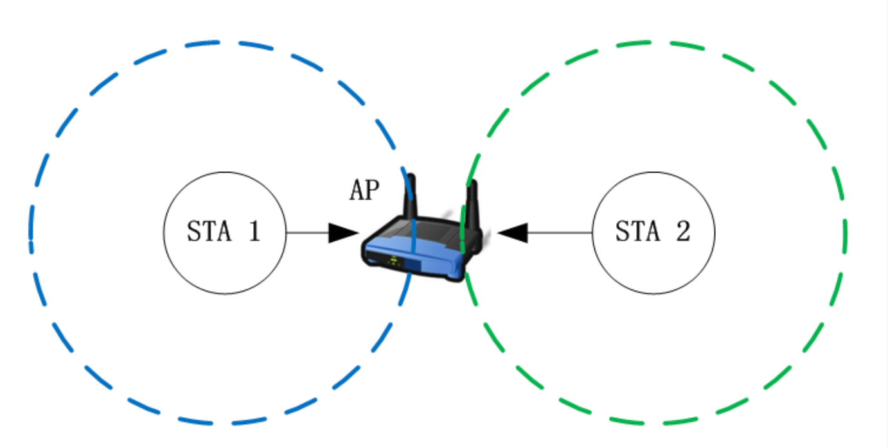
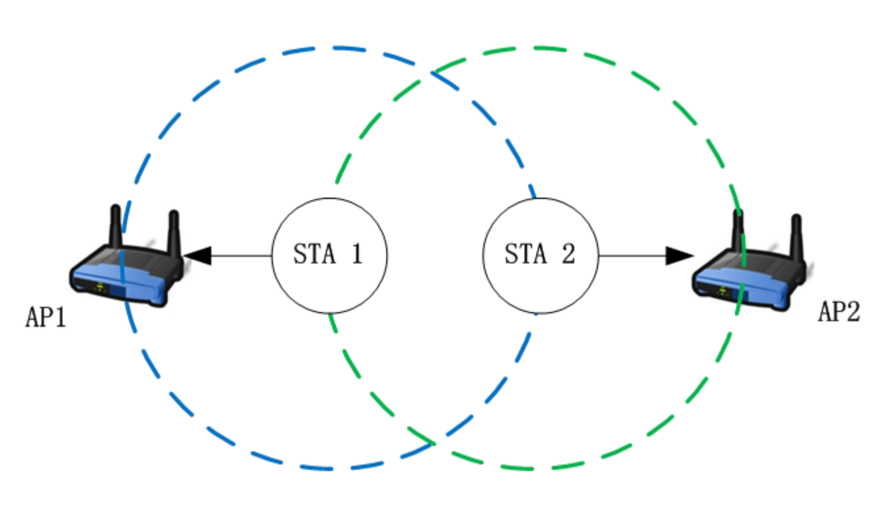

要了解WiFi是怎么进行通信的，首先得从ALOHA说起。
1. 纯ALOHA和时隙ALOHA
ALOHA系统是1968年科学家在夏威夷岛研究出的第一个基于无线信号的网络通信系统。
据AI回答，ALOHA系统网络结构是以Hub为中心的星形结构。
ALOHA系统是星形结构亦或是自组织的网状结构这并不重要，ALOHA是夏威夷语“你好”的意思这也不重要，Hub是什么当然也不重要，重要的是该系统为随机多址接入问题提供了一套原始的解决方法，其核心思想经过多次迭代沿用至今。
随机多址接入问题很重要吗？非常重要！
在交换机出现之前，有线网络和无线网络几乎都是通过随机多址接入的方式进行通信的。
后来交换机普及，解决了有线网络的碰撞问题，但如今无处不在的WiFi依然用的是随机多址接入来通信。
多址接入——是通信大厦最初的基石，如今在WiFi领域依旧发挥着重要的作用！
无论是有线还是无线，都是通过电磁波作为媒介传输数据。当同频率的电磁波相互碰撞，会发生叠加，接收设备收到解析不出来——数据异常。当然，不同频率的电磁波在相互碰撞之后依然可以解析出各自携带的数据，所以2.4g和5g的WiFi信号可以同时发送。
ALOHA中，当出现多个设备向同一个设备同时发送数据时，就会发生碰撞，这就是随机多址接入的最核心的问题——如何处理碰撞。
纯ALOHA协议的处理方法很简单——无所谓碰撞，碰撞完之后重传即可。
当发送设备没有收到ACK确认信号并超时后，则认为是发生了碰撞，会进行重传。当然重传不能立即重传，否则必然会再次碰撞。在详细展开之前，先介绍一下ACK。
因为无线网络信号在空气中传播，一是信号弱、而是很容易产生碰撞，并不可靠，很难知道对方是否接受到了数据。因此会要求接收方在接受到完整且正确的数据后，回给发送方一个ACK信号，表明已经收到了该数据。
那为什么不能立即重传呢？因为那必然会导致再次以相同的形式碰撞，所以需要设置随机的时间，在这之后才能发送，以避免再次碰撞。
也许有人会发现立即重传并不一定会导致碰撞。看下面例子：
a发送数据要1ms，b需要3ms，超时时间要5ms。那么a、b在时刻0同时发送，a重传时刻是5ms，b重传时间是8ms，并且b在3-8ms的时间里不会传输数据，所以a是可以成功传输的。
这个问题很好，但是没意识到一点，那就是纯ALOHA和时隙ALOHA协议中，都是将数据帧设计为相同的长度的，发送时间相同。
纯ALOHA的信道利用率显然很低，因为信号是随机发送的，那如果让信号有规律地发送，那是不是就可以避免很多碰撞了？
我们可以这样，把时间分成一个个相等的块，每个块的时间大致与发送数据的时间相等，发送设备只能在这个块的开头发送数据。
倘若发生冲突，则随机选择若干个块时间后再发送，避免再次碰撞。
“块”被称为时隙，这就是时隙ALOHA。时隙ALOHA的信道利用率是37%，是纯时隙ALOHA的18%信道利用率的两倍。
至于如何计算得到笔者还未研究。
时隙ALOHA有一个很大的问题，那就是有很多空闲的时隙没有利用起来。
比如有a、b，碰撞后a选择3个时隙后重传，b选择6个时隙后重传，那么这6个时隙里信道利用率只有1/3。
还有个问题，那就是是否可以设置中心化的网络结构，让中心设备统一规划各设备的发送次序和时间，来最大化信道利用率？这样既能完美解决空闲时隙未被利用的问题，又能避免碰撞。
回答是可以的！蜂窝网络、卫星通信、WiFi 6/7 等引入了OFDMA、TDMA等。
所以引入“载波监听”。
2. CSMA
CSMA，全称为Carrier Sense Multiple Access，在ALOHA基础上引入了“监听”机制，极大提高了效率。
CSMA分为 1-坚持 CSMA、非坚持 CSMA、p-坚持 CSMA 三种，简单来说，区别就是在监听的方式和监听到信道空闲之后操作的不同，有的直接发送，有的按照p概率发送，有的并非一直监听。当产生冲突后随机事件退避。
“先听再发”的操作极大减少了冲突，但这仍然不够，接下来真正的统治者要出现了，其协议更加精细化，效率更高，至今仍然在不断迭代——CSMA/CA。
3. CSMA/CA
在CSMA的基础上，CSMA/CA增加了两个十分重要的机制：
- 优先级机制
- 退避机制
在数据交换的过程中，有ACK、CTS等信号帧需要优先发送，否则会极大影响到通信效率。
所以设置SIFS、DIFS、PIFS等不同市场的帧间隔，帧间隔越短，优先级越高，这就是帧间隔存在的意义。

如图（一般DIFS是同步开启的，因为会同步监听到信道空闲）。
在设备监听到信道空闲后，需要等待DIFS时间。IFS为 inter-frame space，即帧间间隔。
在最初的设计中，WiFi分为两种模式，分别是点协调式和分布式，所使用的专属帧间间隔分别为PIFS（Proprietary IFS）和DIFS（Distributed IFS），后来分布式占据市场主导地位，PIFS也融入了分布式中。
如果DIFS时间内信道空闲，那么接下来执行随机退避（back-off），在一个范围内随机选择一个数，比如 [0，15] ，之后再等待该数量的slots再执行数据发送过程。slot是该协议设置的最小的间隔单位，在后来的协议中设置为9us。
该图中 STA 1 为8，STA 2 为2。
当DIFS都空闲，每空闲一个slot则倒计时减1，当减为0时开始发送。图中 STA 2 开始发送，在这个过程中 STA 1 检测到信道繁忙。
STA 1 发送结束后接受方在等待SIFS后会发送ACK。
所以SIFS必须比DIFS短，否则ACK就会和其它设备发送的数据产生冲突。
另外ACK等经过SIFS后不需要执行退避（back-off），因为没有设备会与它们竞争。
等 STA 1 监听到信道空闲，则继续之前的倒计时。
倘若某两个设备倒计时同时归零，同时发送数据，则会产生冲突。冲突后会执行二进制指数退避算法，各自重新随机选择一个退避值进行倒计时。
二进制指数退避算法，Binary Exponential Back off，简称BEB。

无线设备检测不到冲突。当数据发送结束，等待SIFS后没有接受到ACK，则认为发生了冲突，则等待EIFS后重新进行倒计时。
接受设备接受到碰撞后的信号，得到的是CRC检验失败的数据，所以不予发送ACK。
对于退避算法，假设初始窗口为 [0,31] ，每次碰撞窗口翻倍。当碰撞次数足够多，比如第七次碰撞后发送失败，则放弃发送，丢弃该包，向上层报错。
SIFS的时间不能为0，因为包括硬件处理等必须需要的时间。DIFS=SIFS+slot*2。
SIFS间隔的帧除了ACK，还有RTS/CTS，以及分片的后续帧。
当SIFS结束，再检测1个slot其实就能判断是否有ACK（信道是否繁忙）。那为什么DIFS里有两个呢？因为SIFS和DIFS之间，还存在着PIFS，为某些控制帧留着优先级的空间。
slot时间并非是随意设定的。
想象一下，a、b、c三者都准备发送数据，分别等到2、3、4的slots。
a监测到第一个slot信道空闲，所以等到第2个slot开始进行发送，b在第2个slot检测出信道有数据在发送，则往后推迟发送时间。
基于以上场景，很显然，在slot时间里要能检测出信道是否空闲！如果时间低于此，则b将会在第三个slot开始发送数据，与a发送的数据相冲突，这不满足设计初衷。
检测信道空闲的时间=信号/电磁波传播的时间+设备检测信道的时间（+MAC层处理延迟）。
但这还不够，因为设备从接收状态转变成发送状态也需要时间，这也应该加入slot中。为什么呢？
大部分设备在slot都是处于接收状态，用来监听信道。试想一下，如果slot只由信号/电磁波传播的时间和设备检测信道的时间组成，当a监测到第一个slot空闲，在第2个slot发送数据时才切换为发送状态，那么a发送数据的时间就会推迟，b可能无法在第2个slot监测到信道中是有数据传输的，从而将会在第3个slot发送，产生冲突。（似乎不太对？）
当a检测到信道空闲，且退避时间归0后，就需要转换收发状态了。
所以slot=信号/电磁波传播的时间+设备检测信道的时间+天线的接收/发送切换。
4. 隐藏终端和暴露终端
一句话说隐藏终端和暴露终端
隐藏终端：有设备“隐藏”起来了，监听不到，不能发送但却发送出去了，因此会产生冲突
暴露终端：有设备“暴露”在眼里，虽然监听到信道繁忙，但是其实可以发送数据而不冲突
隐藏终端、CTS/RTS模式和虚拟载波监听

如图，STA 1和STA 2各自监听不到对方的信号。
当STA 1给AP发送数据时，STA 2监听不到，会以为信道空闲，倒计时结束也会发送数据，这种情况下会在AP处产生碰撞。
为了解决这个问题，提出了CTS/RTS模式，即预约机制。
发送设备在发送数据之前会向AP发送RTS帧（Request To Send，即请求发送），AP收到后会回复一个CTS帧（准许发送）。当其他设备接受到该帧会读取其中的duration，在该期间挂起倒计时，这也被称为虚拟载波监听，和物理载波监听相对。
预约成功后，只有STA 1能发送数据，STA 2因收到了CTS帧在这期间会挂起倒计时，不会发送数据，避免了隐藏终端问题。
CTS/RTS也用于解决帧过长的问题，其核心是想是尽可能用短帧冲突避免长帧冲突。
该模式在很多WiFi中是自动开启，比如当帧长到达一定程度后开启。
暴露终端

隐藏终端在单AP场景也可能出现，而暴露终端只存在于多AP场景。
暴露终端问题并不像隐藏终端那样严重到信道可能无法工作，其问题所在只是信道的利用不够充分。
如图，STA 1和STA 2可以相互监听，但各自的信号影响不到对方的AP。
在这种情况下，当STA 1发送数据，STA 2监听到信道繁忙，则继续等待。但事实上无需等待，因为它发送数据的信号并不会和STA 1的信号在AP 1发生冲突。
这就是暴露终端，可以发送但是不发送。